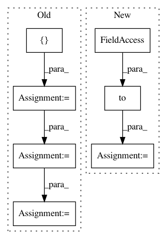

83e80f82d7cf5aa0444c9bdc8709304f10b8d7fc,docs/_static/examples/gan.py,,,#,122
Before Change
// Configure data loader
os.makedirs("./data/mnist", exist_ok=True)
transform = transforms.Compose([
transforms.ToTensor(),
transforms.Normalize((0.5, 0.5, 0.5), (0.5, 0.5, 0.5))
])
dataset = datasets.MNIST("./data/mnist", train=True, download=True, transform=transform)
dataloader = torch.utils.data.DataLoader(dataset, batch_size=batch_size, shuffle=True, drop_last=True)
// Model and optimizer
After Change
return state[G_LOSS] + state[D_LOSS]
batch = torch.randn(25, latent_dim).to(device)
@callbacks.on_step_training
def saver_callback(state):
batches_done = state[tb.EPOCH] * len(state[tb.GENERATOR]) + state[tb.BATCH]
In pattern: SUPERPATTERN
Frequency: 3
Non-data size: 7
Instances
Project Name: ecs-vlc/torchbearer
Commit Name: 83e80f82d7cf5aa0444c9bdc8709304f10b8d7fc
Time: 2018-09-12
Author: mp2u16@ecs.soton.ac.uk
File Name: docs/_static/examples/gan.py
Class Name:
Method Name:
Project Name: rusty1s/pytorch_geometric
Commit Name: 5510a7709e957615fb55397698f8e1c79cd5481b
Time: 2020-07-01
Author: matthias.fey@tu-dortmund.de
File Name: torch_geometric/io/ply.py
Class Name:
Method Name: read_ply
Project Name: ecs-vlc/torchbearer
Commit Name: 0de148f6892361e61d4b68cf97814e73692f6b1a
Time: 2019-03-14
Author: mp2u16@ecs.soton.ac.uk
File Name: docs/_static/examples/gan.py
Class Name:
Method Name: